To enlarge, click some photos which have titles in light blue or light yellow color background.
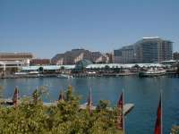 | 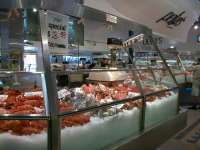 | 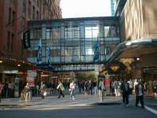 | 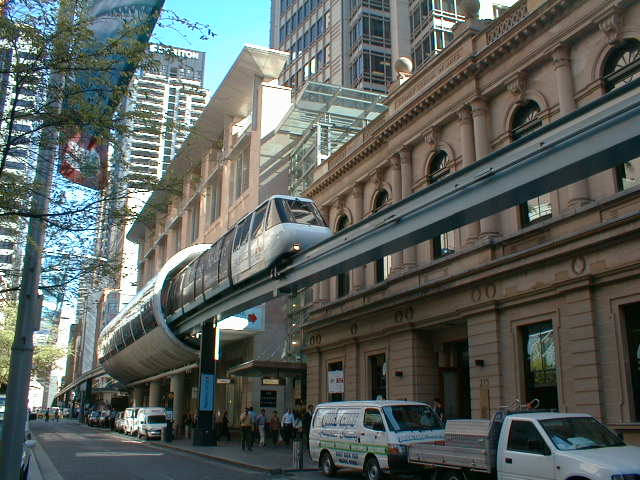 |
| Harbourside Shopping Center | Fish Market | Down Town | Metro Monorail |
Darling Harbour is a marvelous place with the beauty. It has attractive things so famous as Maritime Museum, Max Theatre, Shopping Center and so on. Especially, Shopping Center on sea is mammoth and picturesque. Fish Market is not so big, but many people were coming to see and to eat flesh fish there, because there are some restaurants which are rather cheap. Town is crowed by people and an amazing mixture of old and new buildings. Metro Monorail which gives the impression as Sydney to us looked tiny and convenience.
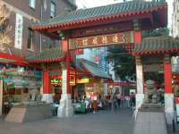 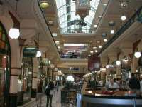 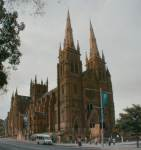
In my opinion Dim Sam in Melbourne is high level in taste, so I expect Chinese cuisine at Sydney. But I disappointed with the test although it was not so bat. Sydney also used such old buildings as Queen Victoria Building, Town Hall and so on. Compared with Sydney, in Japan most building were restructured in new buildings and only old wooden buildings like shrines or temples were preserved.
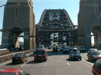 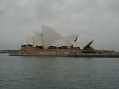 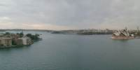 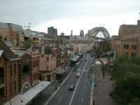
This area is outstanding and it makes Sydney more famous. Most Sydney information show Harbour Bridge and Opera House first. Sydney Harbour is picturesque and one of the best three as beautiful harbours in the world. I don't know the other two harbour but I agree with that. Sydney harbour has many small yacht harbours and a lot of gorgeous cottages, which make the special atmosphere and beauty. The street close to the landing place which have many souvenir shops and art galleries is a peculiarity of an old port town.
City Center
China Town Queen Victoria Building Town Hall St. Mary's Cathedral
Circular / The Rocks
Harbour Bridge Opera House / Town Sydney Harbour The Rocks
{kind=link}
{kind=link}
{kind=link}
{kind=link}
{kind=link}
{kind=link}
{kind=link}
{kind=link}
{kind=link}